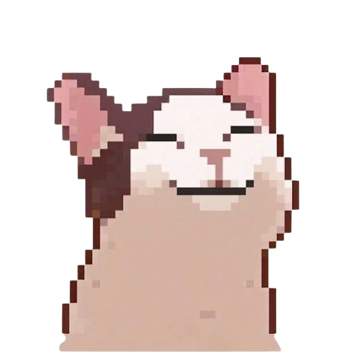
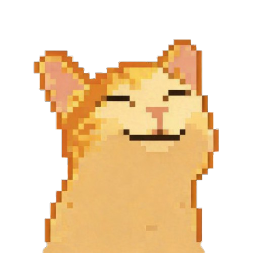

Gabriela Mezzadri Rankel - Técnico de Desenvolvimento de Sistemas
Desvie das coisas não comestíveis e coma o máximo possível de comidas.
Você pode jogar sozinho ou com dois jogadores.

Jogador 1

Jogador 2
1 jogador: Use as setas (← →) para mover o carro
2 jogadores: Use as teclas (A/D) para mover o carro
Você perde vida ao colidir com coisas não comestíveis (sapato).
Quando chegar a 0, você perde.
Você Ganha vida ao colidir com uma maçã, mas ela só aparece quando você precisa de vida
Ganhe 5 pontos comendo os alimentos que caem do céu.
Evite derrubá-los para não perder 7 pontos.
Você só começa a perder pontos assim que comer pela primeira vez
Ao comer um sapato, você perde 2 pontos (e uma vida).
Personalizar: Você pode mudar a música de fundo do jogo de acordo com suas preferências.
Pausar: Congela o jogo.
Voltar: Volta para a página inicial.
1 jogador: Fazer 400 pontos.
2 jogadores: O jogador que fizer 400 pontos primeiro ganha.
1 jogador: Perder as 5 vidas colidindo com coisas não comestíveis.
2 jogadores: O jogador que perder as 5 vidas primeiro perde.